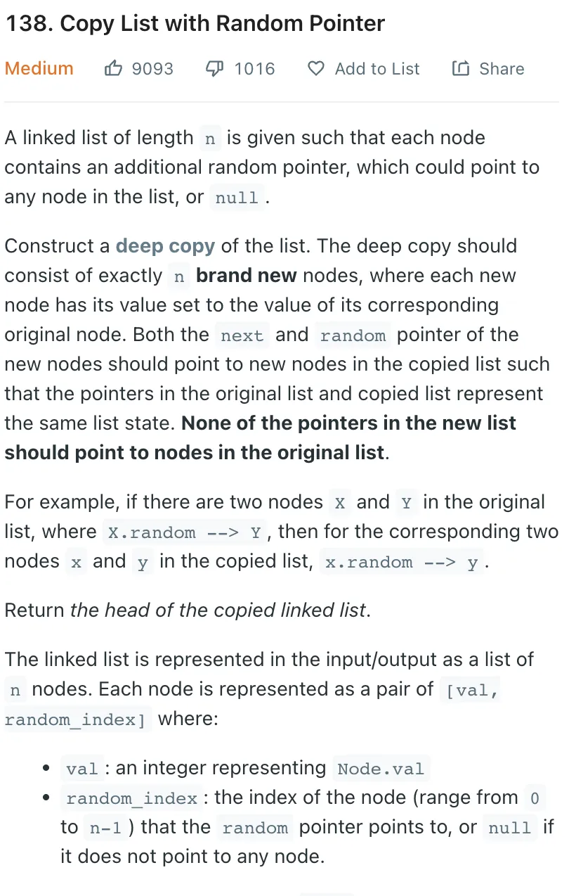
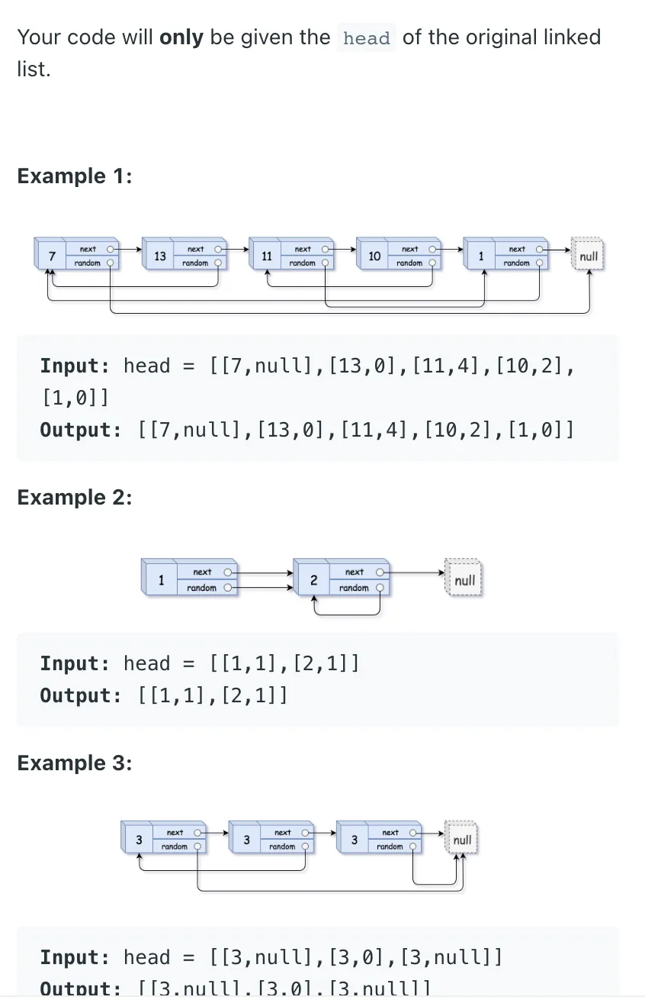

138. Copy List with Random Pointer
考過的公司：Amazon、Bytedance
Question


✍🏽 My Solution - 迭代
Runtime: 0 ms, faster than 100.00% of Java online submissions for Copy List with Random Pointer. Memory Usage: 45.4 MB, less than 63.72% of Java online submissions for Copy List with Random Pointer.
class Solution {
public Node copyRandomList(Node head) {
Node p = head;
// 複製鏈表並將原鏈表和新鏈表連在一起
while (p != null) {
Node q = new Node(p.val);
q.next = p.next;
p.next = q;
p = p.next.next;
}
p = head;
// 將新鏈錶random pointer
while (p != null) {
if (p.random != null) {
p.next.random = p.random.next;
}
p = p.next.next;
}
p = head;
Node dummy = new Node(-1);
Node tail = dummy;
// 拆分两个链表，并复原原链表
while (p != null) {
tail.next = p.next;
tail = tail.next;
p.next = p.next.next; // 斷開原鏈表與新鏈表
p = p.next;
}
return dummy.next;
}
}
🧠 Thought Process
- Why did I choose this particular implementation?
- 定义一个 p 指针，遍历整个链表，复制每个节点，并将原链表和复制链表连在一起。
- 再次遍历整个链表，执行 p->next->random = p->random->next，复制 random 指针。
- 定义虚拟头节点 dummy 用来指向复制链表的头节点， 将两个链表拆分并复原原链表。
- https://leetcode.cn/problems/copy-list-with-random-pointer/solution/fu-zhi-dai-sui-ji-zhi-zhen-de-lian-biao-c2nvs/
- What is the time/space complexity of my solution? How do I know?
- time: O(n)
- space: O(1)
- What mistakes did I make?
- 複製 random 的時候要記得先判斷。if (p.random != null) {